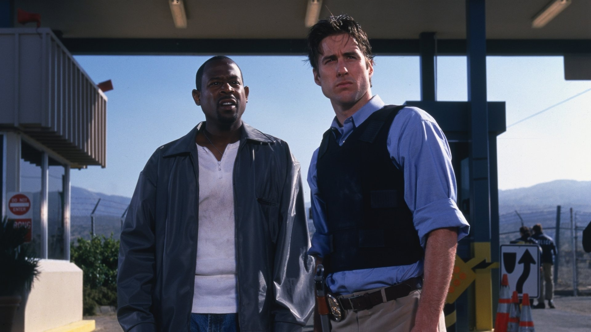

1999
Blue Streak

Starting: Martin Lawrence, Luke Wilson
Blue Streak is a 1999 American buddy cop comedy film directed by Les
Mayfield and starring Martin Lawrence, Luke Wilson, Dave Chappelle, Peter Greene,
Nicole Ari Parker and William Forsythe. The film was shot on location in California.
The prime shooting spot was Sony Pictures Studios which is located in Culver City, California.